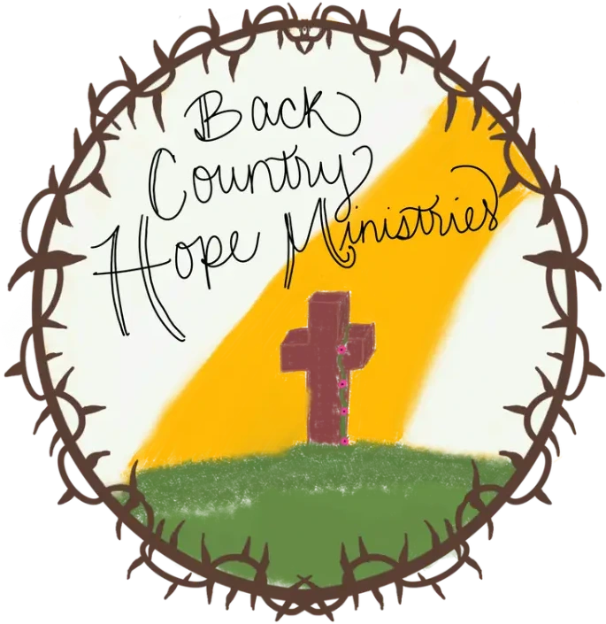

Join the Community
Connect in Discord for fellowship, prayer, creator networking, events, and encouragement.
Join Discord ↗Find your place
Whether you are here to grow, create, pray, serve, or simply connect, there is a meaningful way to take part in the BCH community.
Start where you are
You do not need a platform, title, or large audience. Begin with fellowship, prayer, encouragement, and a willing heart.
Connect in Discord for fellowship, prayer, creator networking, events, and encouragement.
Join Discord ↗Support Gospel-centered conversations by listening, watching, commenting, and sharing episodes.
Open Spotify ↗Submit a prayer request, testimony, question, ministry inquiry, or collaboration idea.
Send a request →Encourage Christian creators through genuine engagement, prayer, collaboration, and respectful feedback.
Creator network →Help welcome others, promote healthy discussion, assist with events, or offer skills as opportunities arise.
Express interest →Pray for wisdom, unity, Gospel impact, the creator network, and everyone reached through BCH content.
Support the mission →Your next step
Join Discord, listen to an episode, watch a live stream, or explore the creator network.
Share who you are, how you found BCH, and what kind of connection or support you are seeking.
Encourage others, show up consistently, pray, learn, and look for natural ways to serve.
A healthy community
“And let us consider one another to provoke unto love and to good works.”Hebrews 10:24, KJV
Take the first step
Join the community today or send a message describing how you would like to be involved.
Back Country Hope
